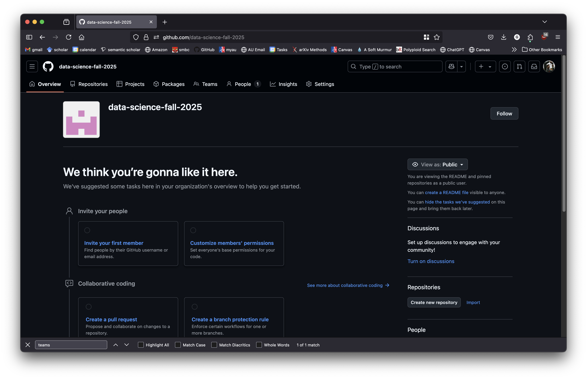
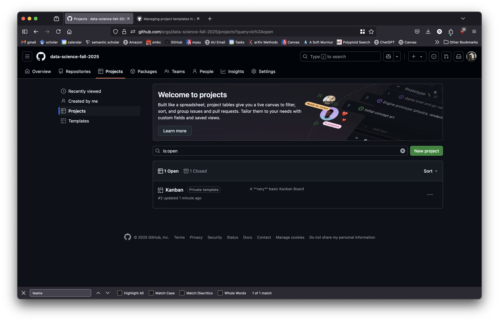
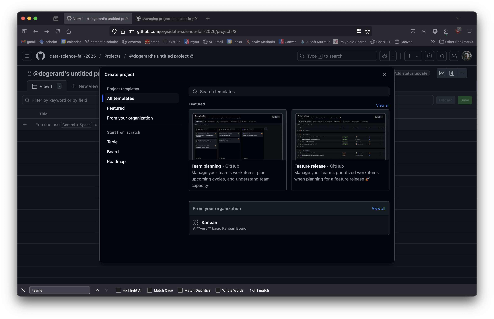
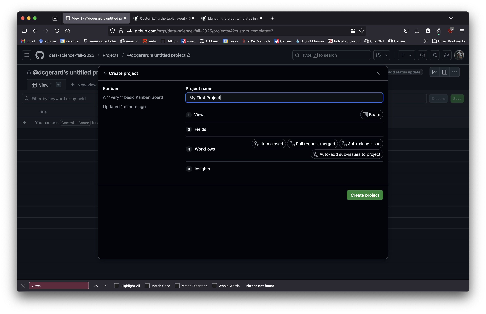
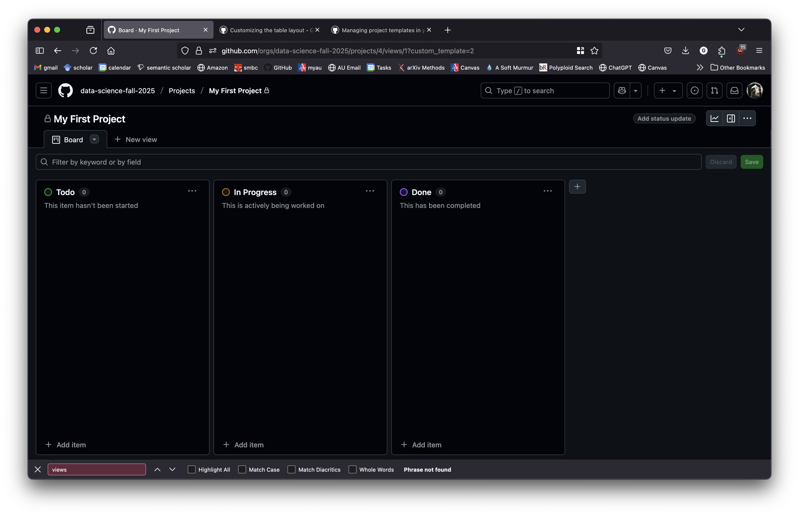
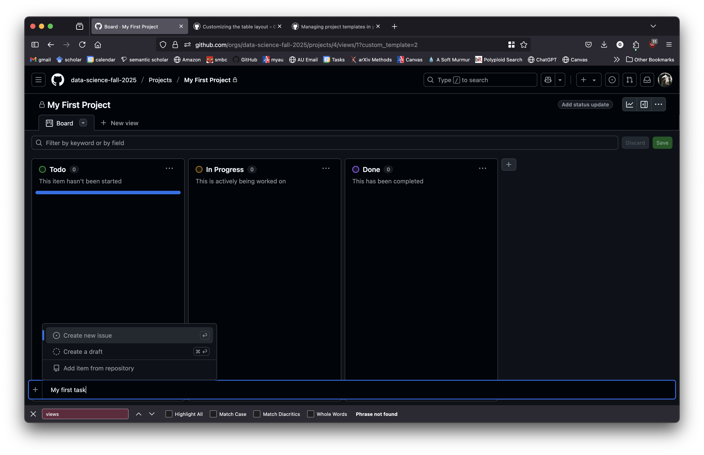
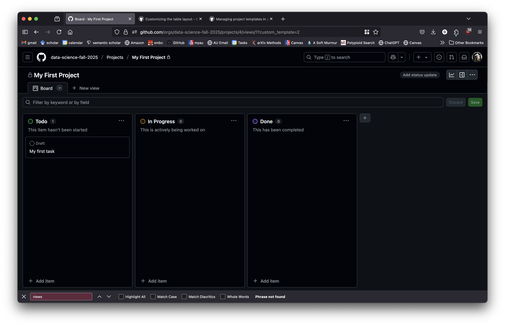
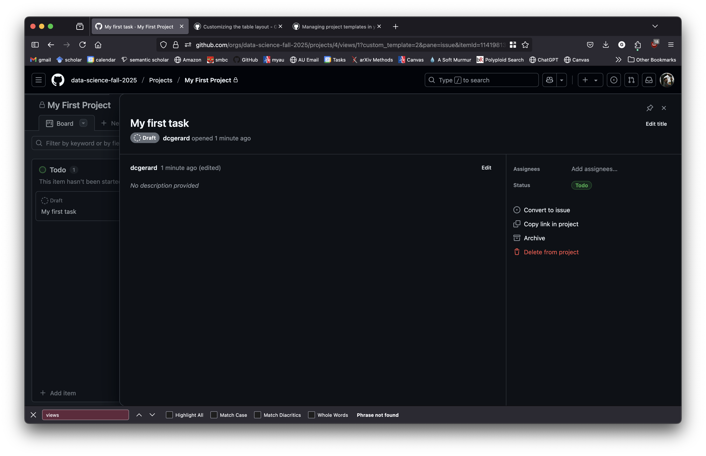

Project Management
Learning Objectives
- Kanban system for project management
Motivation
Almost every group project I have been on as a student was one of these three types:
- I did all of the work.
- I did none of the work.
- I did a fair share of the work, but it was completely separate from my collaborators and we just stapled the different parts together.
I think this experience is really common with students, which is why so many hate group projects.
This is a problem with project management, not student abilities.
There are whole fields devoted to improving project management and team collaboration.
We won’t get into the full details of these. Some folks get entire degrees in the subject.
Here, we will just try to apply a couple of the principles of project management to team collaboration.
Kanban
There are many project management paradigms out there, but we’ll focus on Kanban.
Kanban originated in the Japanese auto industry and has expanded to other fields.
Other systems (like scrum) are too focused on deliverables, whereas in data science outcomes are typically uncertain. This makes other systems not as useful for data science collaborations (Saltz, Crowston, et al. 2017)
E.g., sometimes the questions you have are impossible to answer given the data available.
Saltz and Suthrland (2019) has a very nice summary of the different project management systems used in Data Science.
Kanban is also natively supported in GitHub Projects.
Kanban has five underlying principles:
- Visualize the workflow
- Limit work-in-progress,
- Manage flow,
- Make process policies explicit,
- Improve collaboration by implementing feedback loops
Visualize Workflow
Kanban is a board with three or more columns of increasing levels of completion.
E.g.: “To do”, “In progress”, and “Done”.
GitHub’s default board has: Backlog, Ready, In progress, In review, and Done
You place work items on (virtual) cards on the board. Example work items might be:
- Download and clean the EPA water data
- Exploratory data analysis on the College scorecard data.
- Random forest implementation of the Netflix movie data.
- Draft introduction and literature review for final project
- BAD: “Do the final project” (too vague/broad)
You place the name of the person responsible for the card on that card.
- Limit it to one person, otherwise the split responsibility could make it so that nothing is completed.
- If it requires two people, split the task up into smaller tasks.
All work items begin at the left-most column. As the work-items progress you move them rightward one column until you reach “done”.
This allows all members of a team to see what items are being worked on and the overall progress of the project.
These boards can get way more complicated for more complicated projects.
Typical board sites: Trello, Microsoft Planner, and GitHub (where each task is an Issue).
You should have access to Microsoft Planner, but AU for some reason is very restrictive about creating 365 groups, so we won’t deal with that.
Instead, since we already have a GitHub organization, we will use GitHub Projects to create a Kanban board.
GitHub Projects
Go to the GitHub organization (https://github.com/data-science-fall-2025) and click on the “Projects” tab

Click on “New project”

I already created a template called “Kanban”. Click on that.

Choose your project name and click “Create project”

Click “Add item” in the “To do” column to create a new card

Click on “Create a draft” after you have the card name.

“Draft” is short for “Draft issue”, which is an issue that only exists in the Project. GitHub Projects are set up to correlate most cards to real issues in real repos. But we are using just the very basic features, so no need to get into that now.
Click on the card to open up the card settings.

You can add a description of what work needs to be done by clicking “Edit”. You can assign who is responsible for that work by clicking “Add assignees”

You can now move the card between columns.
By default, I set the limit in “In Progress” to 4, but you can change this by clicking the “…” next to that column.
Limit Work-in-progress (WIP)
Keep each card to about 1–3 days of effort
Set a numeric WIP limit above the column: e.g., “In progress (max 3).”
When the column is full, finish something before starting new work.
This has many advantages:
- allows you to prioritize what tasks to do first.
- minimizes bottlenecks, since most tasks depend on previously finished tasks.
- allows you to reprioritize different aspects of the project by reprioritizing what items are moved to “In progress”.
Measure and Manage Flow
- Organize your “To Do” column vertically by priority.
- Highest priority at the top, lowest priority at the bottom.
- Manage bottlenecks.
- It’s easy to see what is stalled on the visual board.
- Keep your board up-to-date.
- Kanban does not work if anyone doesn’t buy-in to the system and fails to update cards.
- You can assign a team member to be in charge of making sure the board is up-to-date.
Make Process Policies Explicit
Be explicit about when you can move a work item to the next column.
Write your rules on the board
E.g.:
- Code must run from a new environment without errors to move on.
- Qmd’s must render without error.
Improve Collaboration
Use stand-ups (tech-speak for short meetings) and retros (tech-speak for meetings focused on reviewing progress) to tweak the board and process together.
Stand-up
- Relatively frequent meetings
- 10–15 minutes
- Discuss items on the board from right to left (most done to least done)
- Unblock stuck cards — discuss where bottlenecks are.
- Keep it to the board
- No deep dives
Retro
- Less frequent meetings.
- What flowed?
- What stalled?
- Update WIP limits / policies
- Action items become new cards.